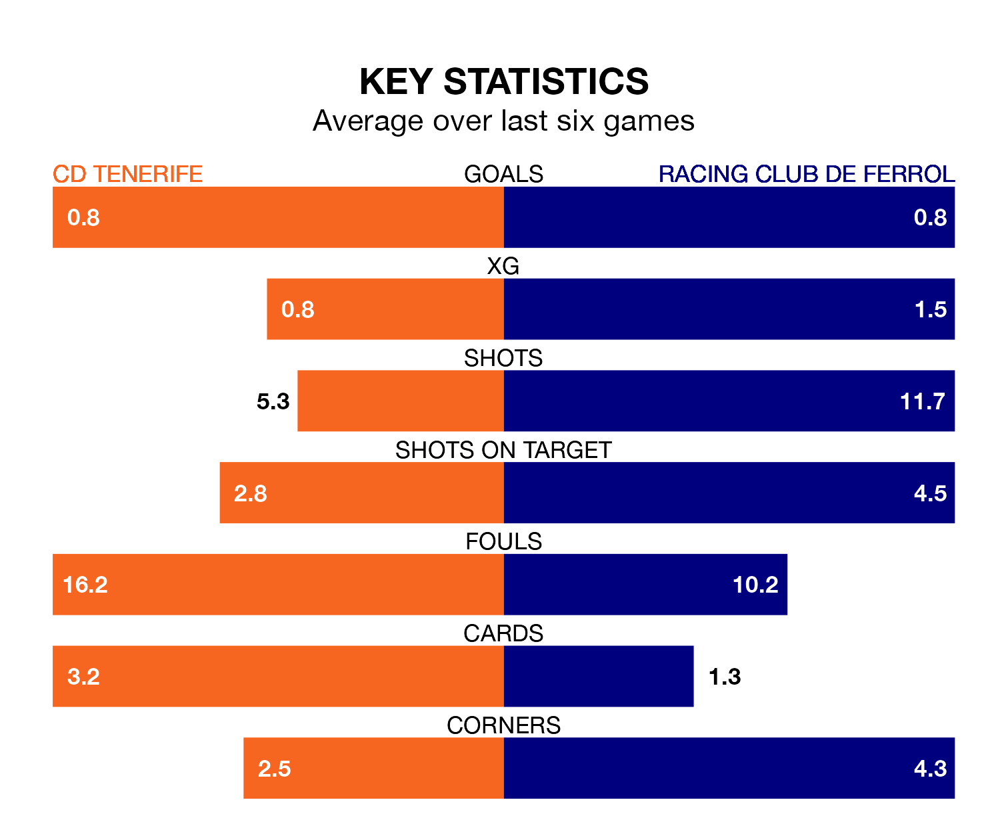

Racing Club de Ferrol travel to CD Tenerife on late Sunday in the Segunda División.
The visitors come into the game on the back of a defeat in their last match, having lost to Mirandés 2-0 at home.
Tenerife, meanwhile, won their last match, 1-0 against Real Oviedo, with their goal scored by Jérémy Mellot.
With 33 goals in 37 games so far this season, Tenerife are scoring at below the league average rate with 0.9 goals per game. But they are conceding fewer than average too, letting in 36 goals at a rate of 1.0 per game.
Racing, meanwhile, are above average scorers, with 1.2 goals per game, compared to a league average of 1.1. They have also conceded 1.2 goals per game.
In Juan Soriano Oropesa, the hosts can rely on one of the league's safest pair of hands. He has kept 15 clean sheets in his 37 appearances this season, and only two other 'keepers – Leganés's Diego Conde and SD Huesca's Álvaro Fernández – have been able to prevent the opposition scoring on more occasions in the Segunda División.
In Ferrol's net, Ander Cantero Armendáriz has 10 clean sheets in 37 games. He has conceded a goal every 85 minutes, 20% more often than the 101 minutes between goals for Soriano Oropesa.
Tenerife are in mixed form in the Segunda División, with two wins and two draws from their last six games.
With two wins and a draw over that period, the away team's form is slightly worse – they have taken seven points from 18, compared to Tenerife's eight.
Racing are ninth in the table after 37 games, of which they have won 14 and drawn 12, earning 54 points.
The home side are three places behind Racing in 12th, with 13 wins and 10 draws putting them on 49 points.
Updated: 12:00 (UTC), 02/05/24